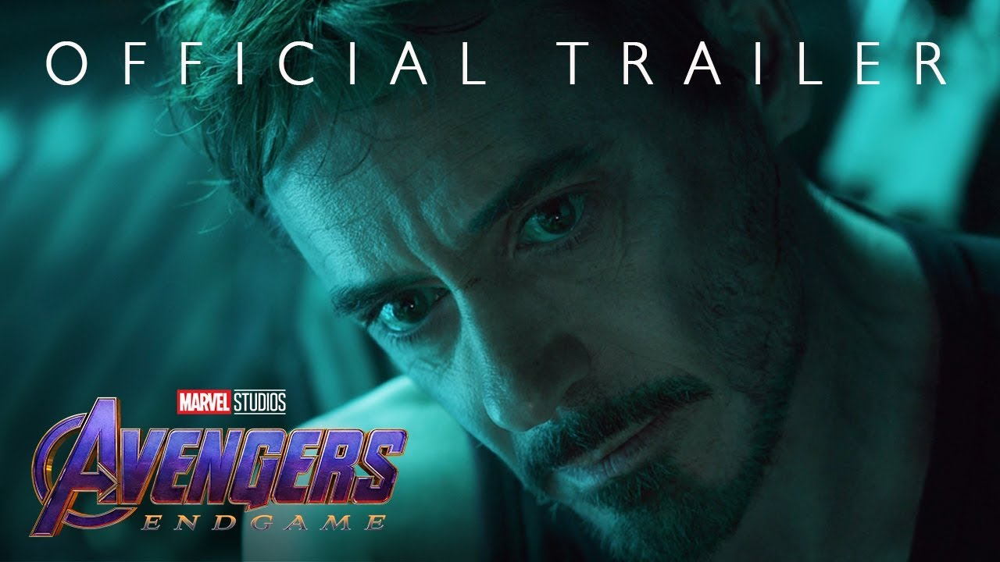

Panduan Tonton Film Marvel
Panduan tonton film Marvel: urutan nonton MCU per fase, film mana yang bisa dilewati, dan platform legal.

📄 Ringkasan Cepat
📜 Informasi Dasar
| Studio | Marvel Studios (bagian dari Disney) |
|---|---|
| Genre | Film superhero, Sci-Fi, Aksi |
| Mulai | 2008 dengan Iron Man |
| Platform | Disney+ Hotstar, Disney+, bioskop |
| Website resmi | https://www.marvel.com/movies |
🎬 Urutan Menonton MCU
Marvel Cinematic Universe dibagi menjadi beberapa fase. Kalau baru mulai, urutan release adalah cara paling aman untuk-synopsis.
Sequel di MCU tidak selalu terkait langsung. Ada beberapa film yang berdiri sendiri, jadi urutan release masih jadi panduan paling akurat.
- Fase 1: Iron Man, The Incredible Hulk, Iron Man 2, Thor, Captain America, The Avengers.
- Fase 2: Iron Man 3, Thor Dark World, Captain America Winter Soldier, Guardians of the Galaxy, Avengers Age of Ultron.
- Fase 3: Civil War, Doctor Strange, Guardians Vol 2, Spider-Man Homecoming, Ragnarok, Black Panther, Infinity War, Endgame.
- Fase 4 onward: film WandaVision dan What If adalah serial, bukan film, jadi bisa ditonton terpisah.
- Phase 3 dianggap sebagai titik puncak saga karena Innocent berhasil menyatukan banyak karakter.
💡 Tips Sebelum Menonton Avengers Doomsday
Avengers Doomsday dijadwalkan tayang di bioskop pada 18 Desember 2026. Trailer dan materi khusus sudah tayang di channel resmi Marvel.
Kalau tidak punya waktu menonton 20an film, ada opsi ringkas lewat serial MCU.
- Tonton trailer resmi di halaman streaming Starwise.
- Serial What If bisa jadi pengganti singkat sebelum menonton film.
- Materi resmi Marvel ada di YouTube channel resmi, bukan channel fans.
- Cek tanggal tayang terbaru karena jadwal bisa berubah.
💻 Platform Legal
Menonton film Marvel harus lewat platform legal. Platform yang biasanya menyediakan film MCU di Indonesia adalah Disney+ Hotstar.
Film yang sedang tayang di bioskop juga bisa ditonton di teater lebih dulu.
- Disney+ Hotstar: sebagian besar film MCU tersedia di sini.
- Bioskop: film yang sedang tayang, termasuk Avengers Doomsday saat rilis.
- Hindari situs streaming ilegal. Selain risiko keamanan, kualitasnya sering jauh lebih buruk dan melanggar hukum.
Catatan: angka pity, jadwal, dan mekanisme di halaman ini bisa berubah setelah patch. Cek pengumuman resmi bila perlu informasi paling mutakhir.